寻址方式与 RISC 技术 链接到标题
寻址方式 链接到标题
寻址方式确定本条指令的操作数地址，或者下一条要执行指令的指令地址，指令的地址码字段往往不是操作数真实的地址，而是形式地址，用 A 表示。形式地址结合指令的寻址方式可以计算出操作数的真实地址，称为有效地址用 EA 表示。
(PC)表示寄存器 PC 的数值，不加括号表示存储介质或编码。
寻址方式分为指令寻址和数据寻址。
- 确定指令存放位置的过程称为指令寻址方式
- 确定操作数存放位置的过程称为数据寻址方式
指令寻址 链接到标题
找到下一条将要执行指令的地址，称为指令寻址，指令基本上按执行顺序存放在主存中，执行过程中，指令总是从内存单元被取到指令寄存器 IR 中。
- 顺序寻址，(PC)+1->PC
- 跳跃寻址，由转移指令指出
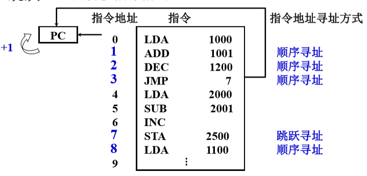
数据寻址 链接到标题
找到当前正在执行指令的数据地址，称为数据寻址。起始数据被存放在内存中，在指令执行的过程中，内存的数据可能被装入其他地方，所以数据的寻址涉及寄存器、内存单元、堆栈、I\O 端口、立即数的访问。
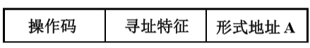
形式地址：指令字中的地址
有效地址：操作数的真实地址
约定 指令字长=存储子长=机器字长
立即寻址 链接到标题
这个寻址方式直接给出操作数，不需要给出地址去其他地方找操作数。
优点：只需要取出指令，便可立即获得操作数，采用立即寻址特征的指令只需要取指令时访问存储器，而在执行阶段不必再访问存储器。
缺点：由于 A 表示的就是立即数 ，因此 A 的位数限制了立即数表示的范围，例如，A 占 8 位，则立即数的表示范围为-128-127，因为立即数都是补码表示的。
立即寻址方式通常用于对某寄存器或内存单元赋初值。
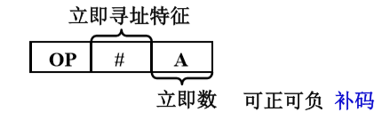
- 形式地址 A 就是操作数
- 指令执行阶段不访存
- A 的位数限制了立即数的范围
直接寻址 链接到标题
通过直接寻址给出的地址取到操作数，然后再将操作数送往运算器或其他地方。
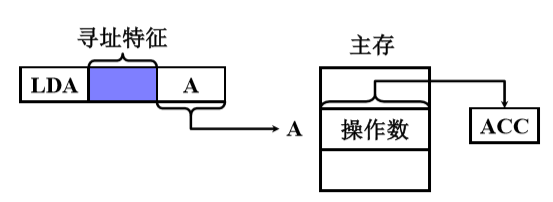
- EA=A,有效地址由形式地址直接给出
- 执行阶段访问一次存储器
- A 的位数决定了该指令操作数的寻址范围
- 操作数的地址不易修改，只能修改 A
隐含寻址 链接到标题
隐含寻址指指令字中不明显地给出操作数地址，其操作数地址隐含在操作码或某个寄存器中。
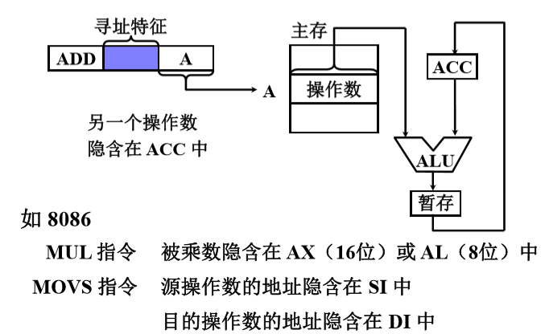
- 操作数地址隐含在操作码中
- 指令字中少了一个地址字段，可缩短指令字长
间接寻址 链接到标题
直接寻址的地址码字段 A 的位数较小，因此寻址范围较小，间接寻址可以解决这个问题。
直接寻址是直接给出操作数的有效地址，即直接可以通过该地址找到操作数，但间接寻址指令给出的地址是操作数的有效地址的地址。
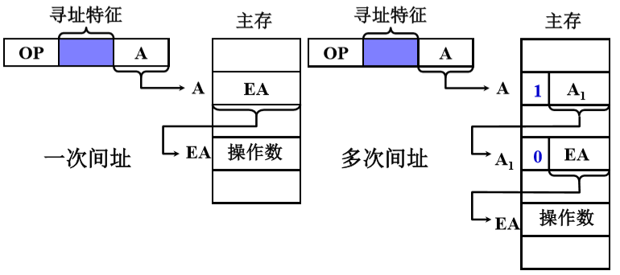
- EA=(A)，有效地址由形式地址间接提供
- 执行指令阶段 2 次访存
- 可扩大寻址范围
- 便于编制程序
间接寻址编程举例 链接到标题
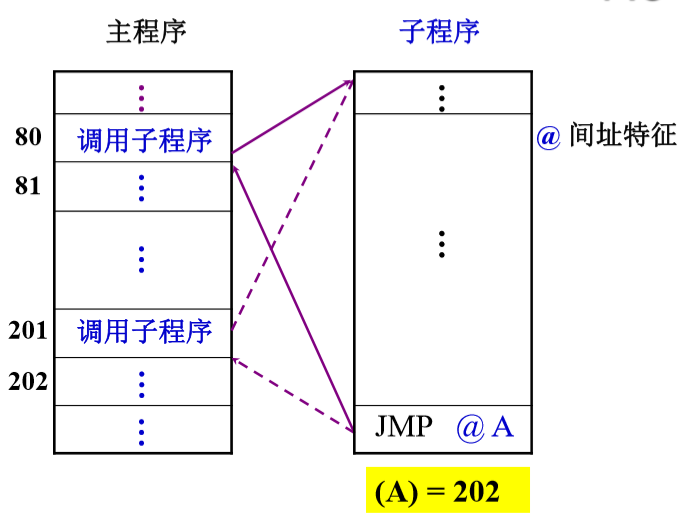
寄存器寻址 链接到标题
与直接寻址类似，在直接寻址的指令字中，地址码字段给出的是主存的地址，而在寄存器寻址的指令字中，地址码字段直接给出了寄存器编号 Ri，则操作数的有效地址 EA=Ri。
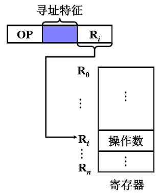
$EA=R_i$，有效地址即为寄存器编号- 执行阶段不访存，只访问寄存器，执行速度快
- 寄存器个数有限，可缩短指令字长
寄存器间接寻址 链接到标题
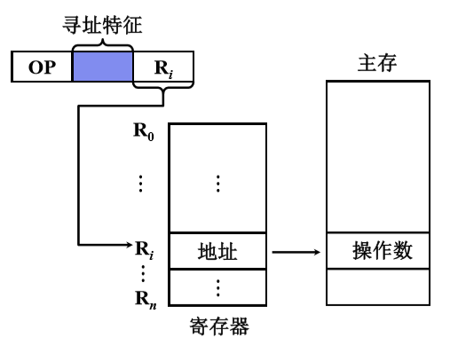
$EA=(R_i)$，有效地址在寄存器中- 有效地址在寄存器中，操作数在寄存器中，执行阶段访存
- 便于编址循环程序
基址寻址 链接到标题
操作数的有效地址需要通过某个基础地址来形成，基础地址需要设置一个基址寄存器(BR)，其操作数的有效地址 EA 等于指令字中的形式地址 A 与基址寄存器中的内容相加。
优点： 扩大操作数的寻址范围，便于解决多道程序问题。
采用专用寄存器作基址寄存器 链接到标题
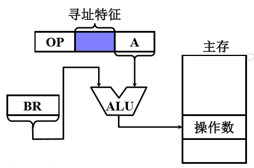
- EA = (BR)+A，BR 为基址寄存器
- 可扩大寻址范围
- 有利于多道程序
- BR 内容由操作系统或管理程序确定
- 在程序的执行过程中 BR 内容不变，形式地址 A 可变
采用通用寄存器作基址寄存器 链接到标题
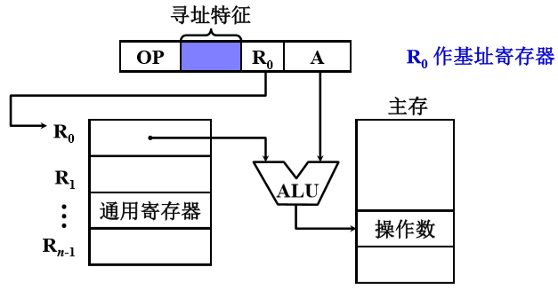
- 由用户指定哪个通用寄存器作为基址寄存器
- 基址寄存器的内容由操作系统确定
- 在程序的执行过程中 R0 内容不变，形式地址 A 可变
变址寻址 链接到标题
变址寻址的有效地址 EA 等于指令字中的形式地址 A 与变址寄存器 IX 的内容相加之和。
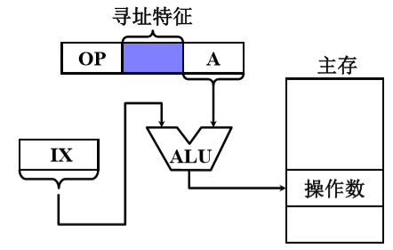
- EA=(IX)+A，IX 为变址寄存器(专用)，通用寄存器也可以作为变址寄存器
- 可扩大寻址范围
- IX 的内容由用户给定
- 在程序的执行过程中 IX 内容可变，形式地址 A 不变
- 便于处理数组问题
设数据块首地址为 D，求 N 个数的平均值 链接到标题
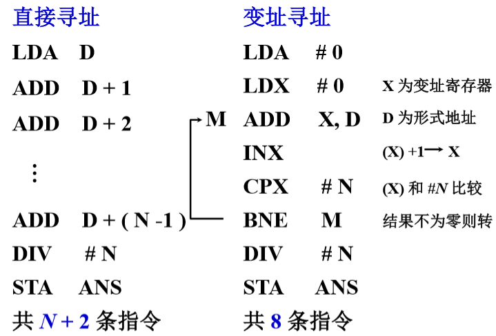
相对寻址 链接到标题
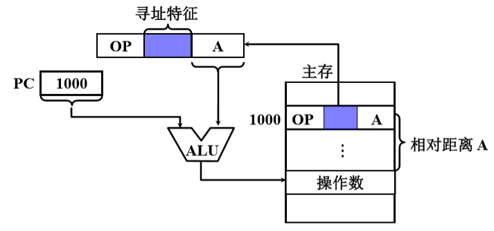
- EA=(PC)+A，A 是相对于当前指令的位移量(可正可负，补码)
- A 的位数决定操作数的寻址范围
- 程序浮动
- 广泛用于转移指令
相对寻址举例 链接到标题
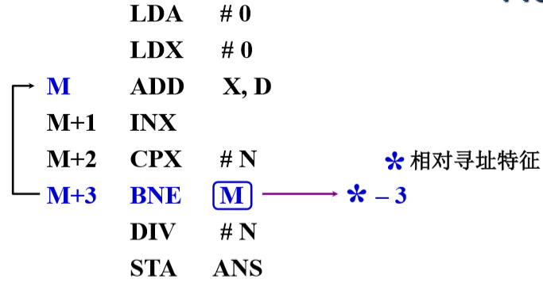
M 随程序所在存储空间的位置不同而不同，而指令 BNE*-3 与 ADD X，D 相对位移量不变.
指令 BNE*-3 操作数的有效地址为 EA=(M+3)-3=M
按字节寻址的相对寻址举例 链接到标题
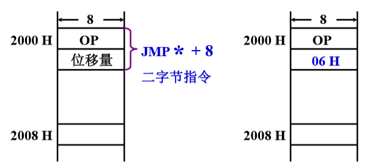
设当前指令地址 PC=2000H，转移后的目的地址为 2008H，因为取出 JMP*+8 后，PC=2002H，故 JMP*+8 指令的第二字节为 2008H-2002H=06H。
堆栈寻址 链接到标题
堆栈的特点 链接到标题
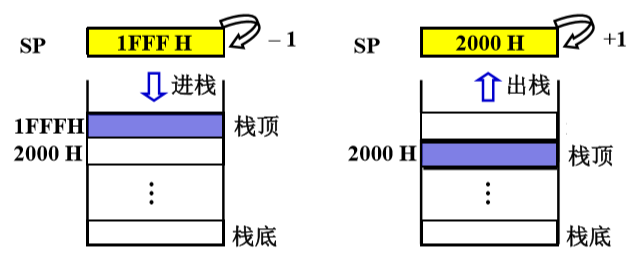
- 硬堆栈，多个寄存器
- 软堆栈，指定的存储空间
先进后出(一个入出口)，栈顶地址由 SP 指出
进栈(SP)-1->SP，出栈(SP)+1->SP
堆栈寻址举例 链接到标题
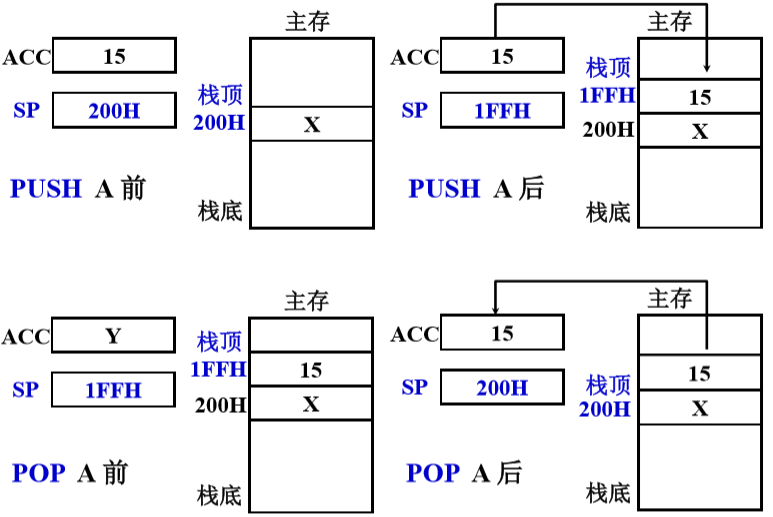
指令格式举例 链接到标题
设计指令格式时应考虑的各种因素 链接到标题
-
指令系统的兼容性
-
其他因素
- 操作类型，包括指令个数及操作的难易程度
- 数据类型，确定哪些数据类型可参与操作
- 指令格式
- 指令字长是否固定
- 操作码位数，是否采用扩展操作码技术
- 地址码位数，地址个数、寻址方式类型
- 寻址方式，指令寻址、操作数寻址
- 寄存器个数，寄存器的多少直接影响指令的执行时间
Intel 8086 链接到标题
- 指令字长 1~6 个字节 INC AX 1 字节 MOV WORD PTR[0204],0138 6 字节
- 地址格式
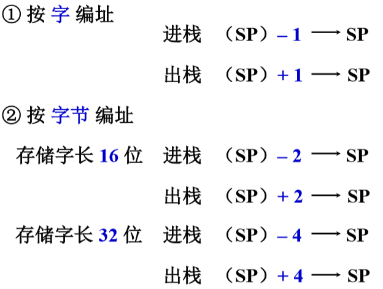
RISC 技术 链接到标题
RISC 的产生和发展 链接到标题
- RISC(Reduced Instruction Set Computer)
- CISC(Complex Instruction Set Computer)
典型程序中 80% 的语句仅仅使用处理机中 20% 的指令，执行频度高的简单指令，因复杂指令的存在，执行速度无法提高，于是提出用 20% 简单指令组合不常用的 80% 指令功能。
RISC 的主要特性 链接到标题
- 选用使用频度较高的一些简单指令，复杂指令的功能由简单指令组合
- 指令长度固定，指令格式种类少、寻址方式少
- 只能 LOAD/STORE 指令访存
- CPU 中有多个通用寄存器
- 采用流水技术 ，一个时钟周期内 完成一条指令
- 采用组合逻辑实现控制器
CISC 的主要特征 链接到标题
- 系统指令复杂庞大，各种指令使用频度相差大
- 指令 长度不固定、指令格式种类多、寻址方式多
- 访存 指令 不受限制
- CPU 中设有 专用寄存器
- 大多数指令需要 多个时钟周期 执行完毕
- 采用 微程序 控制器
RISC 和 CISC 的比较 链接到标题
- RISC 更能充分利用 VLSI 芯片的面积
- RISC 更能提高计算机运算速度，指令数、指令格式、寻址方式少，通用寄存器多，采用组合逻辑，便于实现指令流水
- RISC 便于设计，可降低成本，提高可靠性
- RISC 不易实现指令系统兼容